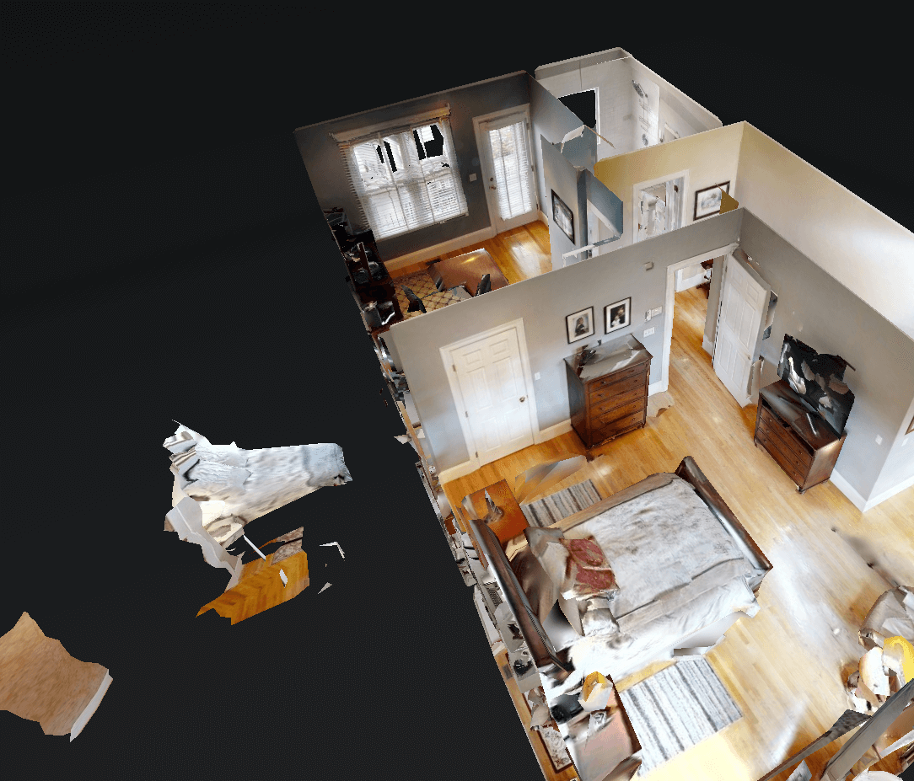

Funny artifacts in a 3D house scan
Jul 30, 2022 · 350 words · 2 minutes read
I like to window shop houses on Zillow. I really enjoy the recent trend of 3D interior scans, as they help give you a feeling for what the place is like, and it allows for another way to explore the space without seeing it in person, which is key for a good cross-country window shopping experience.
The other day, I was looking at a 4 story townhouse, and I noticed a few weird things on its 3D model. These models are frequently weird to look at because of the exterior wall artifacts, but this one was extra weird.

Is that a bed floating in the void?
Why yes, I think it is! But the bed looks familiar: it’s a weird copy of the bed in the room next to it.
Is this the bed’s shadow self? The Upside Down?
I’ll give you a moment to think about why this may be happening. When you’re ready, click the spoiler tag below.
Spoiler: why there is a floating bed
It looks like the 3D camera was bouncing its sensing waves off the mirror! It saw a bed through the mirror, and it couldn’t tell whether the thing it saw was a real bed, maybe through a window, or a bed’s reflection in the mirror. Additionally, because the vantage point of the camera was a limited section of the bed through the mirror, it thought it was a triangle shaped bed — the right side of the ghost bed is truncated along the camera’s line of sight at the edge of the mirror.
Here’s the position the camera was in when it was doing the 3D scan of this room:
It’s so cool that the camera can create a (mostly working) 3D model from just a single vantage point, but you can see how important the additional scans are for verifying and completing the models.
There are a few more in here, too, like these windows that are translated… scarily.
Here’s a link if you want to play around with the 3D model yourself. It’s fun to think about how these things work!